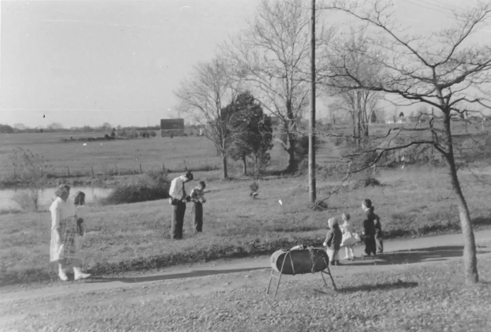

Home / Krehbiels / 006 Krehbiel Elmer and Anna / kre006-00032
kre006-00032
← Return to 006 Krehbiel Elmer and Anna
← kre006-00031b kre006-00033 →
1959 Elmer Krehbiel Funeral photo shoot. There were a lot of group pictures taken at Elmer's funeral. This interesting view shows the photo shoot from a different angle. Incidentally, this area of Braddock Road is now completely covered with townhouses and subdivisions.

Actual size: 3.90" × 2.64" · Scanned at: 600 dpi · 3.71 MP (2342×1585) · Image date: 8 Jul 2005 · Comment date: 8 Jul 2005
Copyright © 2005–2026 Thomas Krehbiel. Images are freely distributable for personal use. For more information about these images contact Thomas Krehbiel (tkrehbiel@gmail.com).
Photos were scanned at either 300dpi or 600dpi, depending on the quality of the photograph. Slides were scanned at 1800dpi. Documents were scanned at 100dpi or 150dpi. Photoshop enhancements: most images have had their contrast improved. Some color photos were corrected to restore color balance. Some blurry images were mildly sharpened. Occasionally dust, scratches, and blemishes were removed digitally.
{kind=link}